מה זה כולל?
10 ימים של שגרת אכילה מסודרת.
5 ארוחות ביום: שייקים וגם אוכל רגיל.
ואני מלווה אותך אישית לאורך כל הדרך.
תני לי 10 ימים ואוביל אותך לירידה של 1-4 ק״ג, דרך ליווי צמוד בוואטסאפ, מעקב משקל וסל תוספי תזונה שמותאם עבורך אישית
אצלי את לא מקבלת תפריט ונשלחת להתמודד לבד.
אנחנו בונות אותו יחד סביב היום שלך,
ואני איתך לאורך 10 ימים מלאים.
בדיסקרטיות: שאלון קצר, ומשם לוואטסאפ איתי
10 ימים של שגרת אכילה מסודרת.
5 ארוחות ביום: שייקים וגם אוכל רגיל.
ואני מלווה אותך אישית לאורך כל הדרך.
קודם מדברות בוואטסאפ.
אחרי שהצטרפת לאתגר, אני מתאימה את התפריט לסדר היום שלך.
ואז את מקבלת סדר יום מוכן לכל 10 הימים.
שייק הרבלייף בטעם שתבחרי, שייקר וכפית מדידה.
גישה להדרכות אקסקלוסיביות שיתנו לך כלים פרקטיים ומנטליים להשגת התוצאה.
וגם ליווי צמוד וקבוצה סגורה.
299 ₪ כולל מע"מ, על כל 10 הימים.
זה יוצא 29.90 ₪ ליום.
מחזור חדש נפתח כל שבועיים.
המחזור הבא נפתח ב-17.11.26
התוצאות משתנות מאישה לאישה ואינן מובטחות
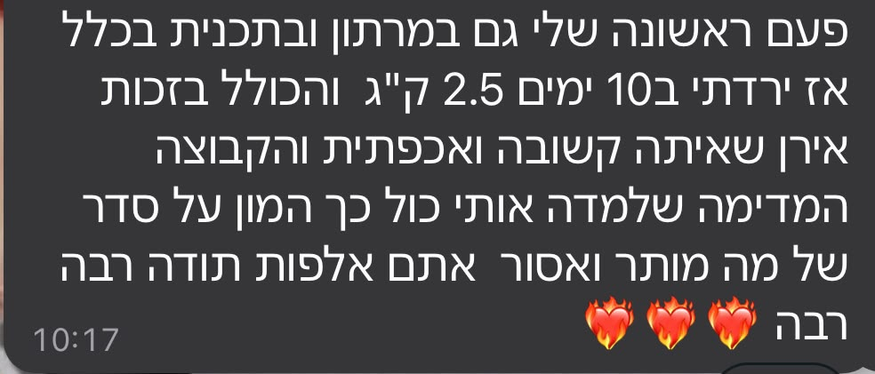
כל היום את מחזיקה יפה. ואז מגיע הערב.
הבית סוף סוף נרגע.
ואת מוצאת את עצמך בולסת מול המקרר או מגירת החטיפים.
לא מרעב. פשוט כי אחרי כל היום הארוך שעבר עלייך, ״מגיע לך להתפנק קצת״…
ואז שוב אותה הבטחה לעצמך: "ממחר דיאטה".
אבל היום רץ.
אין לך דקה לאכול כמו שצריך.
את לוקחת קפה או משהו קטן על הדרך, ושוב מגיע הערב והפלישה למקרר.
אלה המשפטים שאני מקבלת הכי הרבה:
מתוך הודעות אמיתיות שקיבלתי:
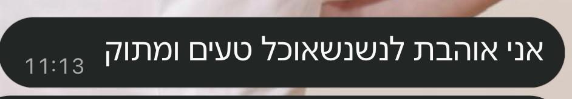
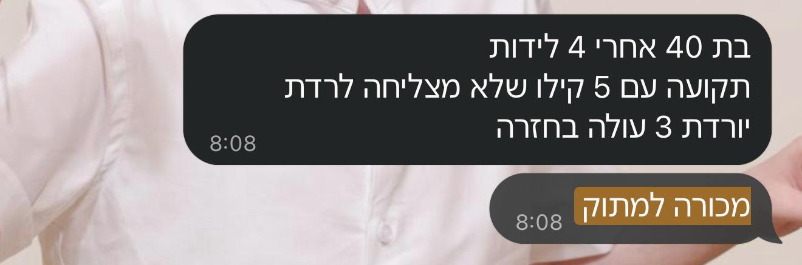
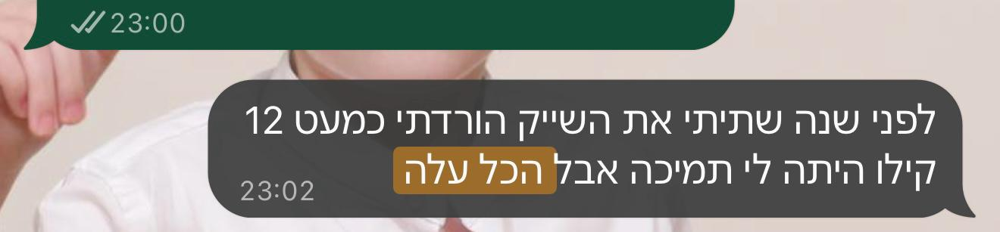
רוב הדיאטות נגמרות באותה נקודה.
מישהו נותן לך דף ומאחל לך בהצלחה.
ואת נשארת לבד מול הערב הראשון שקשה בו.
דיאטת כסאח?
מחזיקה כמה שבועות.
ואז החיים חוזרים, והמשקל איתם.
תפריט מודפס?
נראה מעולה על הנייר.
רק שהוא לא מכיר את היום שלך.
"מיום ראשון אני מתחילה", לבד?
מחזיק עד הרגע שקשה.
ואז אין לך על מי להישען.
לא נכשלת. פשוט השאירו אותך לבד.
אולי שתית וירדת.
ואז הפסקת, והכל חזר.
כי שייק לבד הוא לא תוכנית.
בלי שגרה ובלי ליווי, קל מאוד לחזור אחורה.
מה שחסר לך זה לא עוד תפריט.
חסרה לך שגרה שמתאימה ליום שלך.
ומישהי שנמצאת שם ברגע שקשה.
בדיסקרטיות: שאלון קצר, ומשם לוואטסאפ איתי
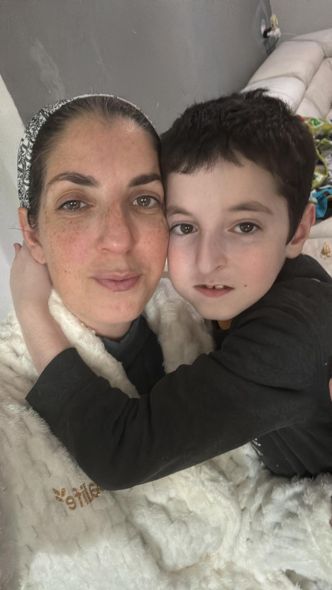
אני אמא.
הבן הקטן שלי הוא ילד עם צרכים מיוחדים.
שנה וחצי אחרי שהוא נולד, כשקיבלנו את האבחון על המצב שלו, כל החיים שלי השתנו, וכמובן שגם השגרה שלי.
הייתי פחות נוכחת.
האכילה הרגשית הפכה ליומיומית.
והמשקל שלי עלה. הרבה. באמת הרבה.
"הרגשתי חסרת אנרגיה וממש לא תפקדתי, לא כאמא ולא כבן אדם. חיפשתי לברוח מהכל, והאוכל היה נחמה."
לא למדתי את זה מספר.
למדתי את זה על הגוף שלי, יום אחרי יום.
ירדתי 20 ק"ג. והכי חשוב: אני שומרת על המשקל החדש שלי כבר מעל 3 שנים.
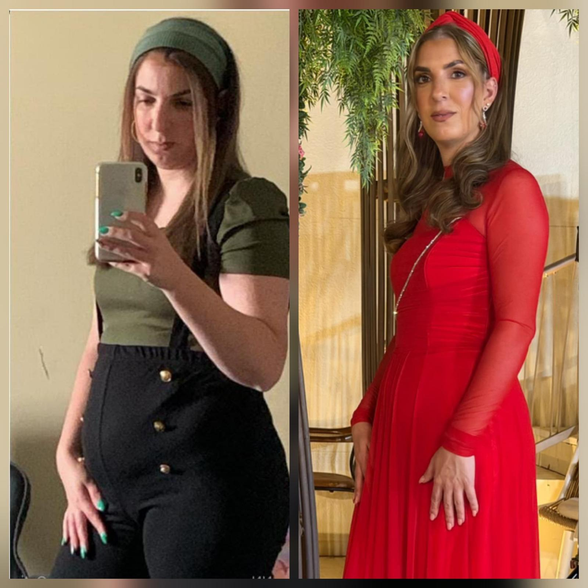
התוצאות משתנות מאישה לאישה ואינן מובטחות
אני עצמאית כבר 10 שנים.
ב-3 השנים האחרונות אני מלווה נשים,
בדיוק באותה הדרך שעשיתי אני בעצמי.
אז בניתי את מה שהיה חסר לי אז…
10 ימים שבהם את לא צריכה לנחש מה אוכלים עכשיו.
זה כבר כתוב לך, וזה מותאם ליום שלך.
וכשקשה? יש לך למי לכתוב.
"אנחנו בונות יחד שגרת אכילה מסודרת של 5 ארוחות ביום, עם שילוב של שייקים ומזון רגיל, ארוחה עיקרית וארוחות ביניים."
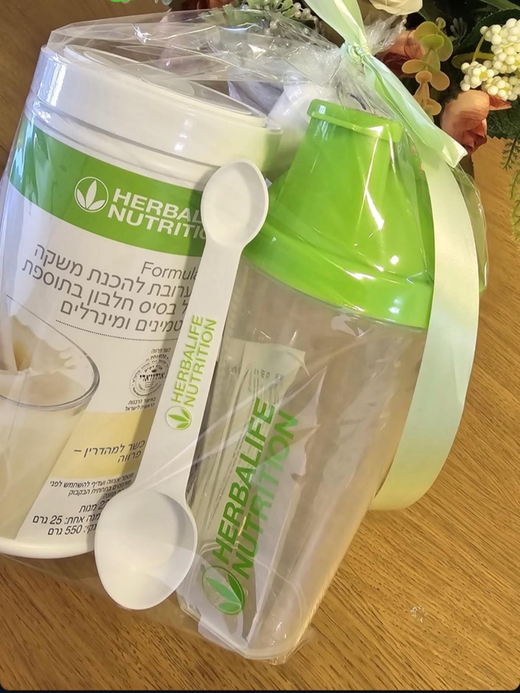
הערכה מגיעה אלייך במשלוח, עד 5 ימי עסקים. המשלוח כלול במחיר.
הוא תחליף ארוחה.
הוא משלים לך ויטמינים, מינרלים וחלבון.
מיליוני אנשים בעולם משתמשים בשייקים האלה.
"אני לא מתחברת לאבקות"
שומעת את זה הרבה, ומבינה.
לכן את הטעם את בוחרת בעצמך.
והשייק הוא רק חלק מהיום: יש גם אוכל רגיל.
והכי חשוב לי שתדעי:
המטרה היא לא רק לרדת במשקל.
המטרה היא ללמוד לשמור על התוצאות גם אחר כך
5 ארוחות ביום: שייקים, וגם אוכל רגיל
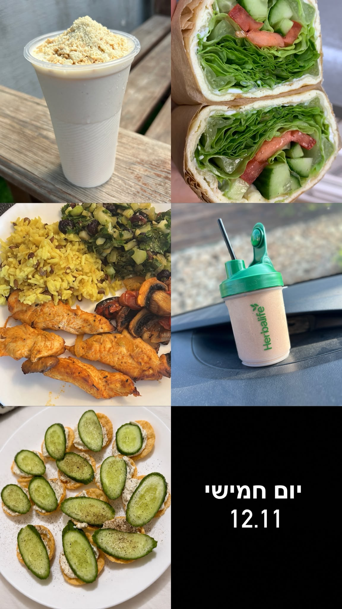
בוקר: מכינה שייק ב-2 דק׳ בלבד, גם בבוקר הכי לחוץ
ארוחת ביניים: משהו קטן, שתכננו מראש
צהריים: ארוחה עיקרית של אוכל רגיל (לפי התפריט שלך)
ארוחת ביניים: בדיוק כשמגיע החשק למתוק
ערב: שייק, במקום הסיבוב מול הארון
"אבל אין לי זמן לזה"
בדיוק בגלל זה את לא צריכה לתכנן כלום.
את לא צריכה לעמוד שעות במטבח.
את רק פותחת את סדר היום, והוא כבר כתוב.
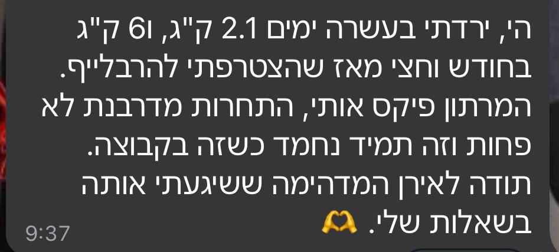
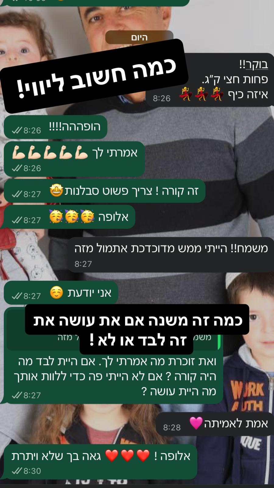
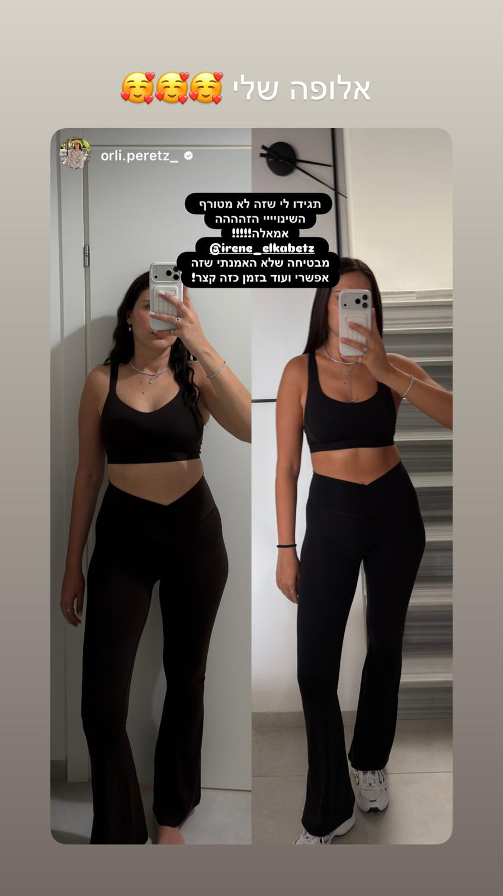
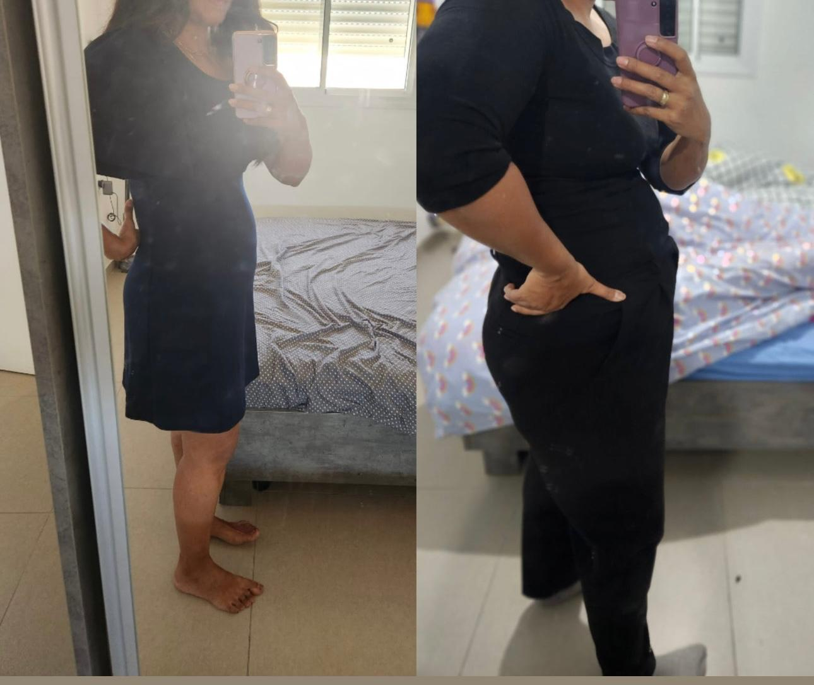
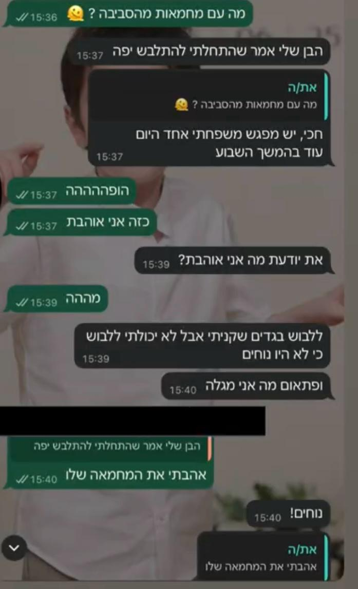
התוצאות משתנות מאישה לאישה ואינן מובטחות
חלק מהתוצאות הן של משתתפות שהמשיכו איתי גם אחרי האתגר
בדיסקרטיות: שאלון קצר, ומשם לוואטסאפ איתי
אני שואלת כל משתתפת מראש
אם יש לה מגבלה רפואית על מאכלים מסוימים.
ככה אנחנו מתחילות רק כשזה באמת מתאים לך.
"שמעתי שזה פוגע בכבד"
זו שאלה חשובה, ואני לא רופאה.
לכן אני לא אענה עליה במקום רופא.
יש לך מצב רפואי? תתייעצי עם הרופא שלך לפני שמצטרפים.
הכל במחיר אחד, בלי הפתעות
299 ₪ כולל מע"מ
זה 29.90 ₪ ליום.
פחות ממה שעולה מגש פיצה אישית.
"זה יקר לי"
אני מבינה. באמת.
אז שאלה אחת, רק בינינו:
כמה כבר שילמת על דיאטות שלא החזיקו?
הפעם את לא משלמת על עוד תפריט שהולך לפח.
את משקיעה בעצמך ומקבלת מישהי שנמצאת איתך.
כל יום, לאורך כל 10 הימים.
מחזור חדש נפתח כל שבועיים.
המחזור הבא נפתח ב-17.11.26
וברגע שהוא מתמלא, הבא בתור רק שבועיים אחריו.
בלי תשלום באתר. קודם מדברות, ואז את מחליטה
שייק הרבלייף (פורמולה 1) בטעם שתבחרי.
שייקר, כפית מדידה וגישה להדרכות נוספות במתנה.
וגם כל הליווי האישי שלי, לאורך כל 10 הימים.
את ממלאת את השאלון הקצר, ועוברת לוואטסאפ שלי.
שם אני מתאימה את התפריט לסדר היום שלך.
ומהיום הראשון יש לך סדר יום מוכן.
מחזור חדש נפתח כל שבועיים.
המחזור הבא נפתח ב-
הממוצע באתגר: 1-4 ק"ג.
וזה ממוצע, התוצאות משתנות מאישה לאישה.
מבינה אותך לגמרי.
לכן אנחנו בונות שגרה, עם אוכל רגיל לצד שייק.
והמטרה שלי היא שתלמדי לשמור על זה גם אחר כך.
הפעם זה שונה. לא תהיי לבד בתהליך.
יש תפריט שמותאם לך ומישהי שמלווה אותך צמוד.
לפני שמתחילות אני בודקת איתך מגבלות רפואיות.
ובכל מצב רפואי, תתייעצי קודם עם הרופא שלך.
את יוצאת עם שגרה שאת כבר מכירה.
ואז נדבר, כדי לבדוק מה הכי נכון לך הלאה.
רק אני.
התשובות שלך בשאלון נשארות בינינו.
5 שאלות קצרות, ואנחנו ממשיכות בוואטסאפ
זה לוקח בערך דקה.
התשובות מגיעות רק אליי, בדיסקרטיות.
ככה אני מגיעה לשיחה כשאני כבר מכירה אותך קצת.
10 ימים. 1-4 קילו ירידה במשקל. ליווי צמוד.
נתראה בוואטסאפ
אירן